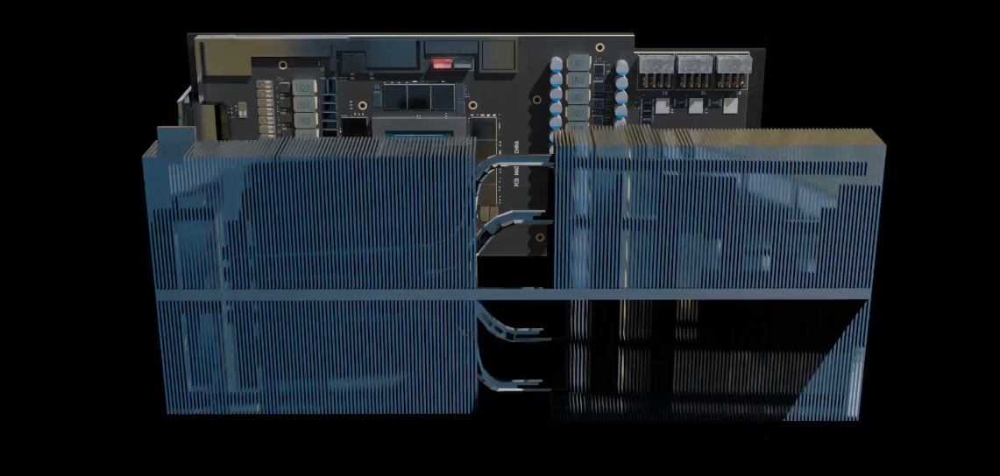

الذكاء الاصطناعي
لقد سمعت به من قبل!
الذكاء الاصطناعي (AI) هو مجال ثوري من علوم الحاسوب يتيح للآلات أداء مهام تتطلب ذكاءً كالإنسان.
من أمثلته: التعلم، الاستدلال، واتخاذ القرارات. من خلال استخدام خوارزميات متقدمة ومجموعات بيانات ضخمة، يمكن لـأنظمة الذكاء الاصطناعي أن تحدد الأنماط، تقوم بالتنبؤات، وتتحسن مع مرور الوقت عبر التعلم الآلي والتعلم العميق. أحد أسباب نجاح الذكاء الاصطناعي هو عتاده المتخصص، وبشكل خاص رقائق إنفيديا المتطورة. صممت في الأصل لأغراض عرض الرسومات، فقد تطورت بطاقات كروت الشاشة من إنفيديا لتصبح مسرعات ذكاء اصطناعي قوية، مع ابتكارات مثل تكنولوجيا Tensor Core التي تدفع حدودها في مجالات متعددة. تقوم هذه الرقائق بتشغيل تطبيقات تتراوح من الرؤية الحاسوبية إلى معالجة اللغة الطبيعية، مما يتيح تقدمًا في السيارات ذاتية القيادة, المساعدين الافتراضيين، والمزيد. يستمر التكامل السلس بين البرمجيات والأجهزة في توسيع قدرات الذكاء الاصطناعي، مما يجعله جزءًا لا يتجزأ من الحياة اليومية. مع تقدم التكنولوجيا، ستظل رقائق الذكاء الاصطناعي من إنفيديا وغيرها من أدوات الحوسبة عالية الأداء حاسمة لإطلاق الإمكانات الكاملة للذكاء الاصطناعي وتحسينه أكثر.

لقد ذكرنا بطاقات كروت الشاشة من إنفيديا سابقًا، لنتعمق أكثر فيما هي عليه فعليًا.
يُعرف كروت الشاشة,وتعرف ايضا كوحدة معالجة الرسومات، بأنه معالج متخصص صُمم للتعامل مع الحسابات الرسومية المعقدة ومهام العرض. على عكس وحدة المعالجة المركزية، تتفوق بطاقات كروت الشاشة في أداء العمليات المتوازية، مما يجعلها مثالية لمعالجة مجموعات البيانات الكبيرة في آن واحد. تُستخدم على نطاق واسع في الألعاب، تحرير الفيديو، وتطبيقات الذكاء الاصطناعي نظرًا لقدرتها على تسريع مهام مثل عرض الصور والتعلم الآلي. كما ذُكر سابقًا، تُعتبر بطاقات كروت الشاشة أساسية لمعالجة الذكاء الاصطناعي حيث توفر سرعات عالية لمعالجة كميات كبيرة من البيانات.
دعونا نلقي نظرة داخل إحدى وحدات كروت الشاشة من إنفيديا, RTX 3080.
الرسوم المتحركة ثلاثيةالابعاد
هذا هو RTX 3080 MSI

هذه هي مراوح التبريد، المسؤولة عن تبريد عن طريق إخراج الهواء الساخن، حيث يولد كارت الشاشة حرارة عند استخدامه، وبناءً على الاستخدام يمكن أن يسخن بسرعة.

هذا هو المبدد الحراري، الذي يُصنع عادةً من الألومنيوم، والغرض منه هو نقل الحرارة من الألواح الخلفية التي تلامس 'النقاط الساخنة'. ثم تنتقل هذه الحرارة عبر الألواح وتُبَرَّد بواسطة المراوح.
واخيرا, هذا هو المعالج الذى يعد قلب كارت الشاشة, وحوله وحدات VRAM مسئولة عن سهولة توصلة البيانات الي المعالج

هذا هو RTX 3080 MSI
تطور الذكاء الاصطناعي
ولادة الذكاء الاصطناعي (1956)
في عام 1956، شهدت مؤتمر دارتموث البداية الرسمية للذكاء الاصطناعي كمجال للدراسة. تخيل الباحثون إنشاء آلات قادرة على 'التفكير' مثل البشر. تضمنت التجارب الأولية الاستدلال الرمزي وحل المشكلات. هذا الحدث التأسيسي وضع الأساس لعقود من الابتكار. لقد بدأت رحلة الذكاء الاصطناعي رسميًا.

فرانك روزنبلات أمام بيرسيترونه.
صعود الأنظمة الخبيرة (1970)
اكتسبت الأنظمة الخبيرة، التي تحاكي اتخاذ القرارات البشرية، شهرة. استخدمت الصناعات الذكاء الاصطناعي لحل المشكلات المعقدة، مثل التشخيص الطبي واللوجستيات. أظهرت برامج مثل MYCIN وXCON إمكانات الذكاء الاصطناعي في التطبيقات الواقعية. أثبتت هذه الحقبة قدرة الذكاء الاصطناعي على المساعدة دون استبدال الخبرة البشرية. بدأت الشركات في اعتماد الذكاء الاصطناعي لتحقيق الكفاءة والدقة.

إدوارد فيجنباوم (جالس)، مدير مركز الحوسبة، مع أعضاء مجلس إدارة مركز الحوسبة.
شتاء الذكاء الاصطناعي (1970-1990)
تضاءل التمويل والاهتمام بالذكاء الاصطناعي مع تباطؤ التقدم. أدت التوقعات غير الواقعية إلى خيبة الأمل والتشكيك. واجه الباحثون قيودًا تكنولوجية وافتقارًا إلى القدرة الحسابية الكافية. رغم النكسات، واصل مجموعة صغيرة الأبحاث الأساسية في الظل. أكدت هذه الفترة على أهمية المرونة وتحقيق أهداف واقعية.

إحاطة للرئيس الأمريكي المساعد جيرالد فورد عام 1973 حول نموذج الترجمة الحاسوبية المبني على قواعد الجانكشن.
ثورة البيانات الضخمة والتعلم العميق (2010)
أحدث انفجار البيانات الضخمة والـكروت الشاشة ثورة في قدرات الذكاء الاصطناعي. تطورت الشبكات العصبية إلى نماذج تعلم عميق قوية. أدهشت الاختراقات مثل التعرف على الصور (مثل ImageNet) العالم. أصبحت الأدوات المعتمدة على الذكاء الاصطناعي مثل Siri وAlexa وGoogle Translate أسماءً معروفة. ثوّر التعلم الآلي الصناعات من الرعاية الصحية إلى السيارات ذاتية القيادة.

Chipset IA H100 من NVIDIA.
الذكاء الاصطناعي التوليدي والمستقبل (2020)
فتحت نماذج الذكاء الاصطناعي التوليدي مثل GPT وDALL·E آفاقًا جديدة. أصبحت الآلات قادرة الآن على إنشاء فن واقعي، وموسيقى، ونصوص شبيهة بالنصوص البشرية. حوّل الإبداع المعزز بالذكاء الاصطناعي مجالات مثل الترفيه والتصميم. ظهرت مخاوف أخلاقية بشأن التحيز، والمعلومات المضللة، وفقدان الوظائف. مستقبل الذكاء الاصطناعي لا حدود له ولكنه يتطلب إدارة حذرة.

.ChatGPT
الحاضر: الذكاء الاصطناعي في الحياة اليومية
الذكاء الاصطناعي مدمج الآن بعمق في حياتنا اليومية، محولاً الصناعات من الرعاية الصحية إلى الترفيه. تدفع الاختراقات مثل DeepSeek، النموذج المتقدم للذكاء الاصطناعي، الابتكارات في تحليل البيانات والتعرف على الأنماط. يُستخدم DeepSeek في مجالات مثل التمويل والرعاية الصحية والصناعات الإبداعية، مما يحسن اتخاذ القرار. مع استمرار تطور الذكاء الاصطناعي، يزداد التركيز على الأخلاقيات والسلامة والشفافية. مع التقدم المستمر في الأجهزة والبرمجيات، تتسارع ثورة الذكاء الاصطناعي لتصبح جزءًا أساسيًا من مستقبل التكنولوجيا.

.DeepSeek
ختاماً لهذا الموضوع:
لقد قطع الذكاء الاصطناعي شوطاً طويلاً، ورحلته لم تنتهِ بعد.
بينما نواصل استكشاف آفاق جديدة، فإن الإمكانيات لا حدود لها.
شكراً لانضمامكم إلينا في هذه المغامرة المضيئة.